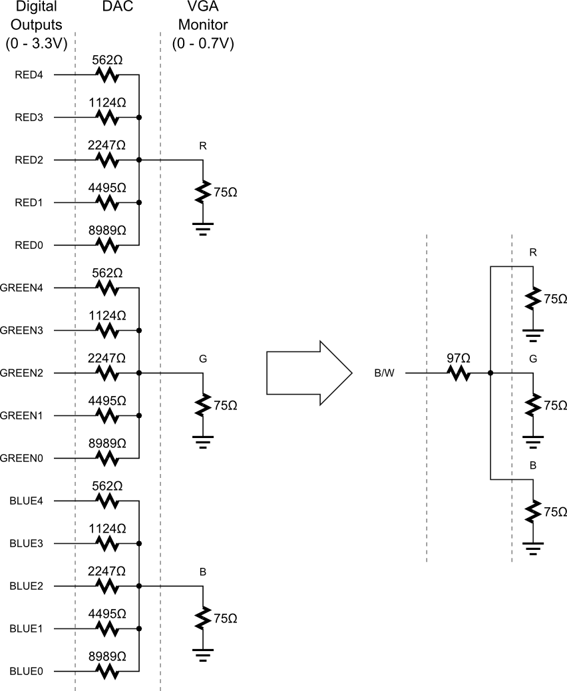
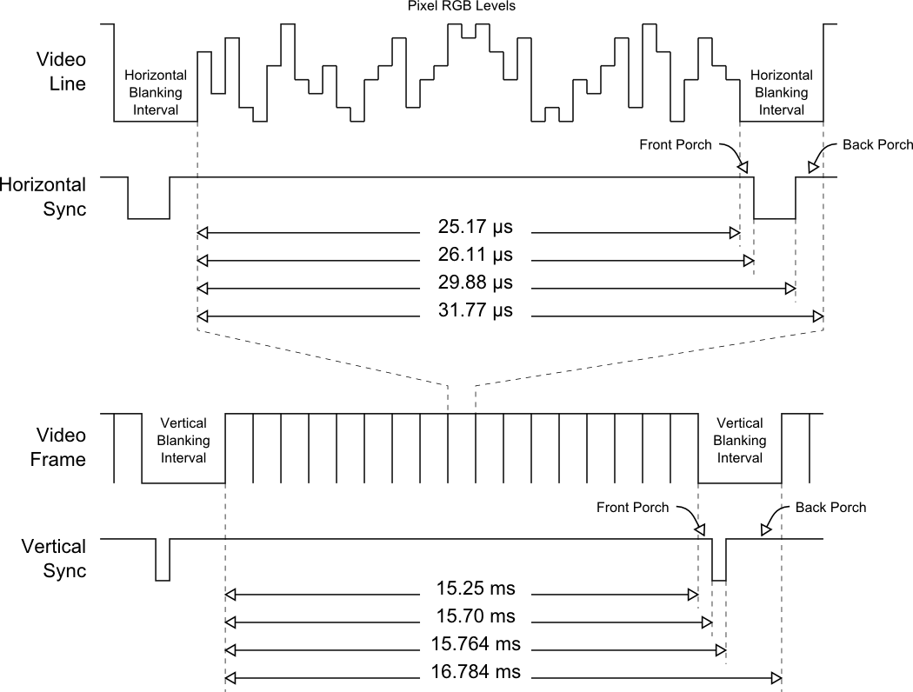
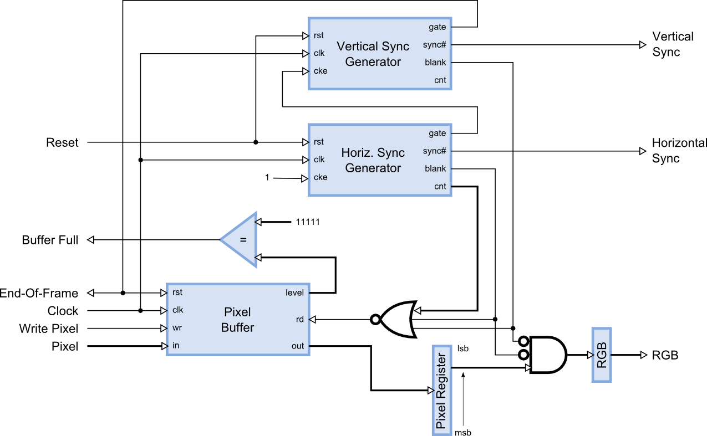
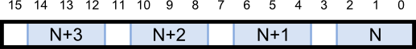
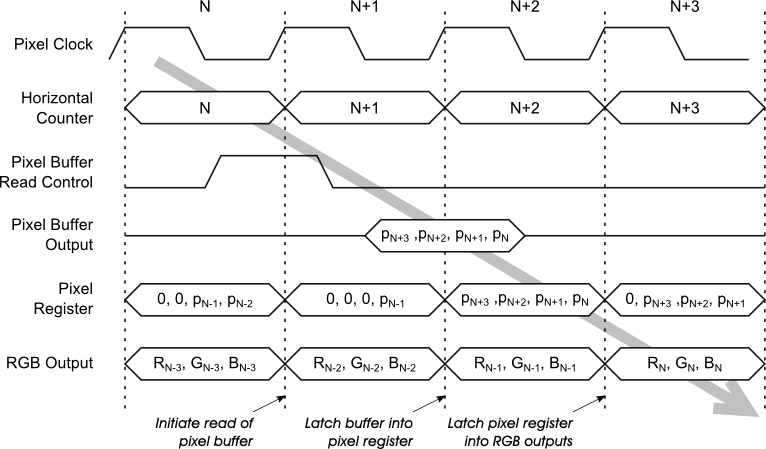
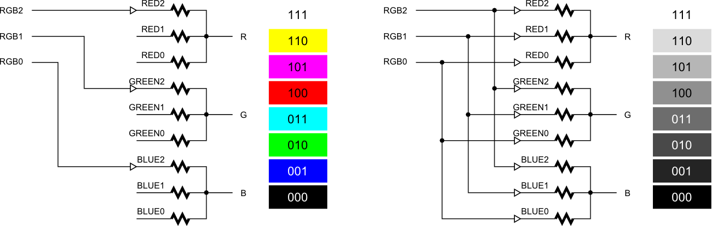

In my previous blog post, I showed a circuit I built to interface my XuLA FPGA board to a VGA monitor. What I didn't show was the code that lets the FPGA fetch an image from SDRAM and display it on a monitor. I'll try to remedy that in this post.
I'll start off with the basics of VGA video signals: signal levels and timing. Then I'll show you the block-level architecture of a module for generating VGA video and an application that uses the module to display an image stored in SDRAM. Finally, I'll post an archive of the Xilinx ISE 13 project files that compiles into a downloadable bitstream for the FPGA on the XuLA board. Hopefully you'll find enough comments in the VHDL code to understand how it all relates to what I'll describe below. (And for all who are about to ask: NO, I do not have a Verilog version of this.)
OK, here we go...
There are three signals -- red, green, and blue (RGB) -- that send color information to a VGA monitor. Signal levels between 0 (completely dark) and 0.7 V (maximum brightness) control the intensity of each color component, which combine to make the final color of a pixel on the monitor screen.
Each analog color input can be set to one of 32 levels by five digital outputs using a simple five-bit digital-to-analog converter (DAC) as shown below. Replicating the DAC for each analog input gives us a palette of 32 x 32 x 32 = 32768 different colors selectable through fifteen digital control lines.
For many applications we only need two colors: black and white. This is done by applying the same level to each of the RGB inputs. This simplifies the DAC circuitry to a single resistor driven by a single output.
An image (or frame) on a monitor screen is composed of h lines each containing w pixels. VGA frame size is expressed as w x h with typical sizes of 640 x 480, 800 x 600, 1024 x 768 and 1280 x 1024.
In order to send a frame of pixels to the monitor, two sync signals are required: a horizontal sync to indicate the start and stop of each line of pixels going from left to right on the screen, and a vertical sync that marks the top and bottom lines so they stack up to form an image. The timing for the VGA sync signals is shown in below.
Negative pulses on the horizontal sync signal mark the start and end of a line and ensure that the monitor displays the pixels between the left and right edges of the visible screen area. The pixels are sent on the RGB signal lines within a 25.17 μs window. After this, a front porch interval of 0.94 μs is inserted before the horizontal sync signal goes low for 3.77 μs. After a back porch interval of 1.89 μs, the next line of pixels begins. Therefore, a single line of pixels occupies 25.17 μs of a 31.77 μs interval. The red, green and blue signals are blanked during the 6.6 μs interval comprised of the front porch, sync pulse and back porch.
In a similar fashion, negative pulses on the vertical sync signal mark the start and end of a frame of video lines and ensure that the monitor displays the lines between the top and bottom edges of the visible monitor screen. The lines are displayed within a 15.25 ms window. After this, a front porch interval of 0.45 ms is inserted before the vertical sync signal goes low for 64 μs. After a back porch interval of 1.02 ms, the next frame begins. Therefore, a single frame of pixels occupies 15.25 ms of a 16.784 ms interval. The RGB signals are blanked during the 1.534 ms interval comprised of the front porch, sync pulse and back porch.
A simple module for driving a monitor just fetches individual pixel colors from a RAM and formats them into a frame that conforms to the VGA timing just discussed.
A high-level block diagram of a pixel-mode VGA generator module is shown below. An external system writes pixel values into a pixel buffer (a 256 x 16 FIFO in this case). The pixels are extracted from the buffer into a pixel register. A pixel field may be 1, 2, 4, 8 or 16 bits wide so the contents of the pixel register are shifted each clock cycle to place the current pixel in the least-significant bit positions. These bits are transferred to a register (unless the video is currently in the horizontal or vertical blanking interval) where they are output to the external RGB video DACs.
Two pulse generation circuits create the horizontal and vertical sync signals. These circuits are identical save for the parameters that determine the pulse timing. The horizontal sync generator outputs a single-cycle gate signal coincident with the leading edge of the horizontal sync pulse. This gate signal connects to the clock-enable of the vertical sync generator so it only updates its timing counter once per line of pixels (i.e., it counts the video lines). The gate signal of the vertical sync generator triggers at the start of the vertical sync pulse and is used as an end-of-frame indicator to the external source of pixel data. It also resets the pixel buffer and erases its contents so the VGA generator starts from a completely cleared state on every frame.
The horizontal and vertical blanking signals are logically-OR’ed with the lower order bits of the horizontal pixel counter to determine when to read more pixels from the buffer. For example, if the pixels are four bits wide, then a 16-bit word is needed from the buffer once every four clock cycles. So, the pixel buffer read operation is initiated whenever the video signal is not being blanked and the lower two bits of the pixel counter are both zero.
A full signal is sent to the external source of pixels to let it know when to stop filling the buffer. For a 255-entry FIFO, the full signal is raised when the upper five bits of the FIFO level signal are equal to 11111 (meaning there are at least 248 words stored in the FIFO). This leaves seven empty slots in the FIFO to serve as a safety buffer for pixel data that the external source may already be generating in its own pipeline.
Within the 16-bit words of the pixel buffer and the pixel register, individual pixels of width W are placed in fields that are 2L-bits wide such that 2L-1 < W ≤ 2L. The pixel information itself is placed into the lower bits of each field (if W is less than the size of the field). So, for example, a three-bit pixel would be placed into a four-bit field, and four of these fields would be packed into a 16-bit word with pixel N in bit positions 2..0, pixel N+1 in bit positions 6..4, and so on as shown below.
Below, you can see an example of the sequence of operations performed by the VGA generator with four-bit pixels. At cycle N in the visible portion of a line of video, the counter in the horizontal sync generator will output a value of N. If the least-significant two bits of the counter are both zero, then the rd input to the pixel buffer will be driven high to initiate the reading of four more pixels, pN…pN+3. The buffer read operation begins at the rising edge of clock cycle N+1 and the 16-bits of pixel data are available to latch into the pixel register at the rising edge of clock N+2. At the beginning of cycle N+3, the least-significant four bits of the pixel register containing pixel pN are sent to the RGB output register. Simultaneously, pixel pN+1 is shifted into the lower four bits of the pixel register for output during cycle N+4.
As for the RGB output bits themselves, how are they associated with the signals that drive the DACs? Which bits drive the red color DAC, or the blue or green? The VGA module takes no position on that, it just outputs the bits. The designer who uses the VGA module determines what the RGB bits do by what he connects them to. For instance, each bit in a three-bit pixel could be assigned to drive all the inputs of an individual color DAC, thus creating an eight color palette. Or the three-bit pixel could be applied to the pins of all the DACs in parallel to create an eight-level grayscale video signal.
The pixel-mode VGA module connects to external systems through the following I/O ports:
clk_i: This is the main clock input.
pixelDataIn_i: Data words containing one or more pixels enter the pixel buffer through this bus.
wr_i: This active-high input initiates the writing of a word of data into the pixel buffer..
full_o: This active-high output indicates when the pixel buffer is full and no more space is currently available for more pixels.
eof_o: This active-high output indicates when the display of a video frame has been completed and pixels for the next frame can begin entering the pixel buffer.
rgb_o: This bus outputs the bits for the red, green and blue color DACs that drive the VGA monitor. The width of this bus determines the number of bits in each pixel and, thus, the number of pixels packed into each word of the pixel buffer.
hSync_bo: This active-low output drives the horizontal sync input of the VGA monitor.
vSync_bo: This active-low output drives the vertical sync input of the VGA monitor.
rst_i: This active-high, asynchronous input resets the internal circuitry of the sync generators.
The following generic parameters customize the operation of the pixel-mode VGA module:
FREQ_G: This parameter sets the master operating frequency of the controller (in units of MHz). This frequency is used to calculate the time delays for the horizontal and vertical sync pulses.
CLK_DIV_G: Setting this parameter to a value greater than 1 reduces the rate at which pixels are fetched from the buffer and delivered to the monitor. For example, if FREQ_G=100.0 and CLK_DIV=4, then pixels are sent to the monitor at a rate of 25 MHz.
PIXELS_PER_LINE_G: This parameter determines the number of pixels displayed in the active portion of each line of video.
LINES_PER_FRAME_G: This parameter sets the number of lines of pixels displayed in the active portion of each video frame.
OFFSET_RIGHT_G: The active portion of the video frame can be shifted right (left) a number of pixels by setting this parameter to a positive (negative) value.
OFFSET_DOWN_G: The active portion of the video frame can be shifted down (up) a number of pixels by setting this parameter to a positive (negative) value.
FIT_TO_SCREEN_G: If this Boolean parameter is set to true, then the sync generators are configured so that the given number of pixels and lines fill the entire width and height of the screen, respectively. Setting this parameter to false embeds the active video region into a standard 31 Khz horizontal / 60 Hz vertical video frame.
An application of the pixel-mode VGA module combines it with the following modules in order to display a stored image:
A clock multiplier to generate a fast 100 Mhz clock from a slow 12 Mhz clock;
An external SDRAM chip that stores the image to be displayed;
An SDRAM controller that manages all the SDRAM housekeeping tasks (refresh, opening/closing pages, etc.) and presents a simplified memory interface to the rest of the FPGA;
A counter that steps through the SDRAM addresses.
The complete system operates as follows:
As long as the VGA module pixel buffer is not full, the read control input of the SDRAM controller is active. This initiates a read of the SDRAM from the current address in the counter.
Once the SDRAM controller initiates the requested read operation (the earlyOpBegun signal is driven high), the counter increments and points to the next location from which pixels will be read.
The SDRAM controller continues the read operation from the previous address location. This usually takes one clock cycle, but may take as many as eleven cycles if refreshing is in progress or a new SDRAM page must be activated.
Once the SDRAM read operation is completed, the value from the SDRAM is sent to the VGA module and the rdDone signal is raised to initiate a write into the pixel buffer.
If the pixel buffer isn't full after the data is written to it, another read of image data from the SDRAM is initiated. If the buffer is full, then reads from the SDRAM are halted until the VGA module can remove some of the pixel data from the buffer.
Once the VGA module has displayed the entire frame, the eof signal is raised. This clears the address counter so it once again points to the beginning of the image in memory. Then the entire sequence is repeated.
Comments
New Comment